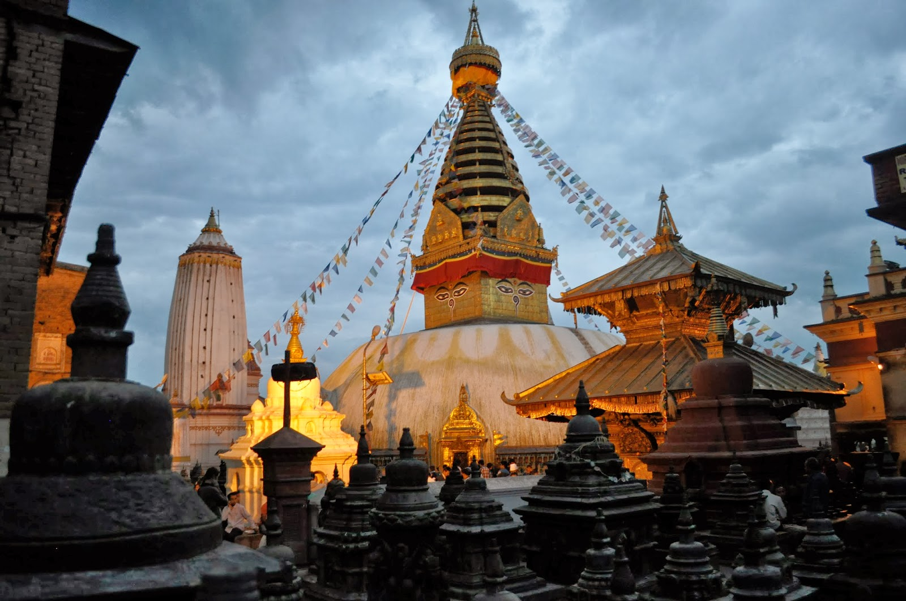

Swayambhunath Temple

Swayambhunath, also known as the Monkey Temple, is a revered heritage site situated on a hilltop in the
western part of Kathmandu. It is one of the oldest and holiest Buddhist stupas in Nepal and a UNESCO World
Heritage Site. Swayambhunath is not only a significant religious site but also an iconic symbol of
Kathmandu.
The most prominent feature of Swayambhunath is the large white dome-shaped stupa adorned with golden spires
and the watchful eyes of Buddha painted on all four sides. This distinctive symbol represents enlightenment
and serves as a constant reminder of the Buddhist teachings.
 The stupa is surrounded by numerous smaller
stupas, statues, prayer wheels, and Tibetan prayer flags, creating a colorful and spiritually charged
atmosphere.
To reach the stupa, visitors must climb a steep staircase lined with prayer wheels. As they ascend, the
mesmerizing views of the Kathmandu Valley gradually unfold, providing a breathtaking panorama of the
cityscape and the distant snow-capped peaks of the Himalayas.
The stupa is surrounded by numerous smaller
stupas, statues, prayer wheels, and Tibetan prayer flags, creating a colorful and spiritually charged
atmosphere.
To reach the stupa, visitors must climb a steep staircase lined with prayer wheels. As they ascend, the
mesmerizing views of the Kathmandu Valley gradually unfold, providing a breathtaking panorama of the
cityscape and the distant snow-capped peaks of the Himalayas.
One of the unique aspects of Swayambhunath is the lively presence of monkeys, hence its nickname "Monkey
Temple." These mischievous creatures roam freely around the temple complex, entertaining visitors and adding
to the charm of the place. However, visitors are advised to be cautious with their belongings as the monkeys
can be curious and occasionally snatch objects.
The site encompasses not only the stupa but also a wealth of Buddhist monasteries, shrines, and Tibetan
shops. Devotees and visitors can engage in meditation practices, listen to the chanting of Buddhist monks,
or simply find a quiet spot to soak in the spiritual ambiance. The serene atmosphere, the sound of
fluttering prayer flags, and the scent of incense create an atmosphere of tranquility and reflection.
A visit to Swayambhunath offers a profound spiritual experience and a deep connection with Buddhist
traditions and philosophy. It is a place where ancient traditions meet modern life, where spiritual devotion
blends with the beauty of the natural surroundings, making it a must-visit destination for those seeking
spiritual solace and cultural immersion in Kathmandu.